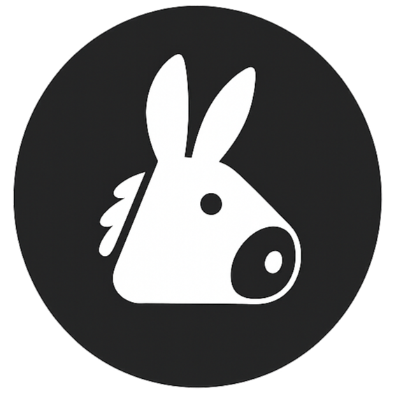

Donkey
v1.0.0 · Local Layer
Your AI's Persistent Memory Layer
Stop re-explaining architecture patterns, rules, and APIs in every new chat window. Save context locally, retrieve it instantly.
01
Activate
Type @donkey in ChatGPT, Claude, or Gemini to trigger the shortcut menu.
02
Save
Type @donkey save to analyze and structure the active chat context into memory.
03
Recall
Type @donkey use [project] to instantly inject relevant snippets into the input field.